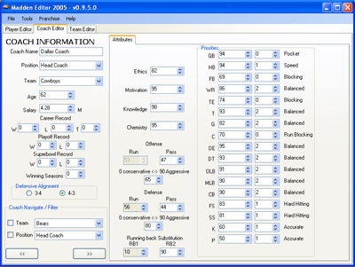
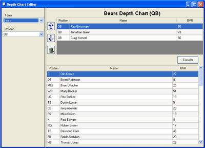
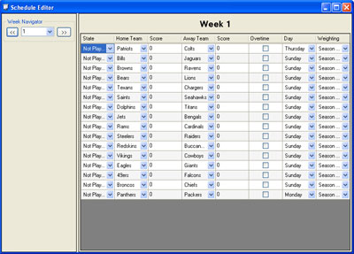
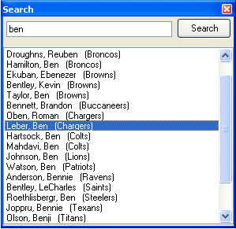

This page contains information and files relating to the Madden Amp project. This page hopefully will be replaced by a better site dedicated to the development of the Madden Amp Project. (If there is anyone who would like to do this and contribute please email us)
This project aims to develop the most comprehensive EA Sports Madden Franchise Editor. This page contains the following information
|  |  |
|  |  |
Ver 3.1-r316 - (10-Feb-2007) Download
Ver 3.0-r299 - (26-Aug-2006) Download
Ver 2.3.3-r294 - (10-Jul-2006) Download
The editor is licenced under the GPL so all source code is available and you are actively encouraged to help develop this program.
The source is available from the subversion repository address below
https://svn.sourceforge.net/svnroot/maddenamp/trunk
Whatever editor you choose, if you end up submitting code back to the repository it would be good to make sure your not substituting spaces for tabs. I'm not totally sure, but I think some Visual Studio's default to that setting and I think it sux cause if forces all developers to use the same spacing levels or it looks crap. If you keep tabs, it all looks great no matter what.